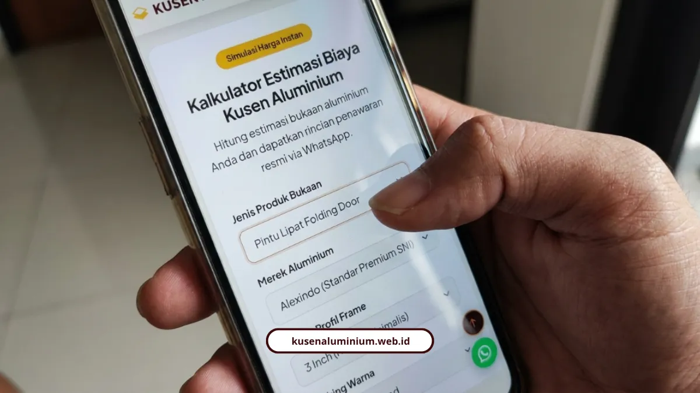

Cara Pakai Simulasi Harga Kusen Aluminium Online
📌 Ringkasan Inti
Panduan praktis cara pakai simulasi harga kusen aluminium online di website kami untuk mendapatkan estimasi Rencana Anggaran Biaya (RAB) transparan dalam hitungan menit:
- Estimasi RAB instan tanpa perlu menunggu survei lapangan atau telepon awal ke kantor.
- Hanya butuh input dimensi ukuran (panjang & tinggi), pilihan profil 3 atau 4 inch, serta varian warna finishing.
- Mendukung berbagai tipe bukaan: Pintu Swing, Sliding, Folding, hingga Jendela Casement dan Partisi Kaca Tempered.
- Hasil hitungan kalkulator terintegrasi langsung dengan tombol kirim penawaran via chat WhatsApp.
- Layanan konsultasi online dan survei pengukuran ulang ke lokasi 100% gratis untuk seluruh kawasan Malang Raya.
- Apa Fungsi Utama Simulasi Harga Ini?
- Bagaimana Langkah-Langkah Menggunakannya?
- Rumus Apa yang Dipakai di Balik Simulasi Ini?
- Spesifikasi Apa Saja yang Bisa Dipilih di Simulasi?
- Apa Standar Mutu di Balik Hasil Simulasi Ini?
- Apa Kata Klien yang Sudah Pernah Pakai Simulasi Ini?
- Coba Dulu Sebelum Jadwalkan Survei
- FAQ Seputar Simulasi Harga Kusen Aluminium
Simulasi harga kusen aluminium di website kami bisa langsung Anda pakai sendiri untuk dapat estimasi RAB dalam hitungan menit. Tidak perlu telepon dulu atau nunggu survei buat tahu kisaran anggarannya.
Saya sering ketemu orang yang takut duluan sebelum tanya harga, khawatir kena biaya tersembunyi. Makanya fitur ini kami buat supaya Anda pegang kendali penuh atas perhitungan sejak awal.
Apa Fungsi Utama Simulasi Harga Ini?
Fungsinya sederhana, mengubah ukuran bukaan yang Anda punya jadi estimasi Rencana Anggaran Biaya secara instan. Hasilnya bisa langsung Anda terima via WhatsApp tanpa harus datang ke lokasi dulu.
Ada beberapa manfaat konkret yang langsung terasa:
- Transparansi penuh: menghindari biaya tersembunyi sejak awal perencanaan
- Kecepatan dan kemudahan: bisa diakses kapan saja sebelum jadwalkan survei
- Layanan lanjutan gratis: setelah simulasi, tim teknis kami siap survei lokasi dan pengukuran ulang gratis untuk wilayah Malang Raya
Bagaimana Langkah-Langkah Menggunakannya?
Prosesnya cuma butuh beberapa klik, tidak perlu keahlian teknis apa pun. Berikut urutannya:
- Buka halaman utama di kusenaluminium.web.id
- Klik tombol Kalkulator Estimasi Biaya Instan di halaman utama
- Masukkan dimensi ukuran bukaan, panjang dan tinggi dalam meter
- Pilih profil kusen, 3 inch atau 4 inch, dan merek YKK AP atau Alexindo
- Pilih opsi warna, Anodized, Powder Coating, atau Urat Kayu
- Pilih tipe bukaan, Pintu Swing, Sliding, Folding, atau Jendela Casement
- Dapatkan estimasi RAB, hasil perhitungan langsung memuat perkiraan biaya transparan
- Tekan tombol Kirim via WhatsApp untuk terhubung langsung ke tim teknis kami
Kalau Anda ingin tahu dasar rumus yang dipakai kalkulator ini biar tidak asal percaya angka di layar, kami sudah bahas lengkap rumusnya di cara menghitung kebutuhan kusen aluminium untuk rumah minimalis.

Rumus Apa yang Dipakai di Balik Simulasi Ini?
Kalkulator ini sebenarnya menjalankan rumus dasar yang sama dengan yang biasa dipakai tukang berpengalaman. Berikut rumusnya:
- Keliling kusen (m'): (Panjang + Lebar) x 2
- Luas kaca (m2): Panjang x Lebar
- Total estimasi biaya: (Panjang kusen x harga kusen/m') + (luas kaca x harga kaca/m2) + biaya pasang/aksesoris
Dengan rumus terbuka seperti ini, Anda bisa cross check sendiri hasil yang keluar dari kalkulator, bukan sekadar menerima angka mentah-mentah.
Kalkulator Instan & Survei Lokasi Gratis Malang Raya
Hitung estimasi bukaan pintu, jendela, atau partisi kaca Anda secara mandiri dalam hitungan menit, lalu klaim survei lokasi dan pengukuran ulang gratis untuk kawasan Malang, Batu, dan sekitarnya.
Spesifikasi Apa Saja yang Bisa Dipilih di Simulasi?
Ada beberapa variasi yang bisa Anda sesuaikan langsung di form simulasi, supaya hasil estimasi benar-benar mendekati kebutuhan riil:
- Ukuran profil: 3 inch yang ringkas dan ekonomis untuk rumah minimalis, atau 4 inch dengan kedalaman frame lebih tebal untuk bukaan tinggi atau gedung komersial
- Finishing dan warna: Anodized hitam dan silver metalik, Powder Coating putih modern dan cokelat dark, atau motif serat kayu
- Jenis bukaan: Jendela Casement dengan pengunci rambuncis ganda, Pintu Lipat, Pintu Geser dengan rel heavy-duty stainless steel, sampai Partisi Kaca Tempered 8-12 mm
Memilih material rangka aluminium berpresisi dan rapat yang dilengkapi seal karet berkualitas sangat penting karena dapat menjaga suhu ruangan tetap stabil serta menghemat konsumsi energi AC hingga sekitar 20%.
Apa Standar Mutu di Balik Hasil Simulasi Ini?
Angka yang keluar dari simulasi bukan asal tebak, tapi mengacu ke standar pengerjaan yang benar-benar kami terapkan di lapangan. Ini standarnya:
- Sistem presisi miter 45 derajat, sudut sambungan rapat tanpa celah
- Weather-seal karet EPDM di sekeliling frame, kedap suara sekaligus anti bocor
- Profil SNI tebal 1,1 mm - 1,35 mm dari YKK AP, Alexindo, dan Forta
- Garansi resmi pengerjaan plus jaminan bebas kebocoran sealant
Kalau Anda penasaran kenapa spesifikasi setebal ini penting untuk cuaca lembap di Malang, kami sudah bahas alasannya di material kusen aluminium anti karat yang cocok untuk iklim Malang.
Apa Kata Klien yang Sudah Pernah Pakai Simulasi Ini?
Andi Pratama, pengusaha di Malang, merasakan langsung manfaat konsultasi gratis sebelum eksekusi:
"Rekomendasi aplikator terbaik di Malang. Konsultasi gratis sangat membantu, tim teknis memahami kebutuhan dengan baik, dan hasil akhir melebihi ekspektasi kami."
dr. Sylvia Anggraeni, konsumen rumah tinggal di Lowokwaru, Kota Malang, juga puas dengan hasil akhirnya:
"Jendela casement Alexindo buatan KUSEN ALUMINIUM Malang hasilnya sangat rapi. Kedap air saat hujan deras dan bising berkurang drastis."
"Fitur simulasi harga instan kami rancang dengan rumus keliling meter lari riil dan standar HSPK, memberi transparansi penuh bagi pemilik rumah sebelum memutuskan jadwal survei fisik di lapangan."
Coba Dulu Sebelum Jadwalkan Survei
Simulasi harga ini dibuat supaya Anda tidak perlu menebak-nebak anggaran sebelum ambil keputusan renovasi atau bangun baru. Cukup masukkan ukuran, pilih spesifikasi, dan estimasi RAB langsung di tangan Anda.
Yuk langsung coba sendiri lewat estimator harga instan kami, lalu lanjutkan chat WhatsApp untuk klaim survei lokasi gratis. Kalau masih ingin lihat referensi hasil kerja nyata dulu, silakan mampir ke galeri proyek kami.
FAQ Seputar Simulasi Harga Kusen Aluminium
Belum final, hasil simulasi sifatnya estimasi awal. Angka final baru keluar setelah survei lokasi dan pengukuran ulang gratis dilakukan tim teknis kami.
Bisa. Simulasi ini mendukung pilihan bukaan besar seperti pintu lipat, pintu geser, dan partisi kaca tempered yang biasa dipakai untuk ruko, kafe, atau kantor.
Tidak perlu. Simulasi harga dan konsultasi awal via WhatsApp sepenuhnya gratis, biaya baru dibicarakan setelah Anda setuju dengan hasil survei dan penawaran resmi.